This is my favourite home-made soup perfect for a cold winter's night.
Ingredients
- 2 tablespoon's lard, butter or oil 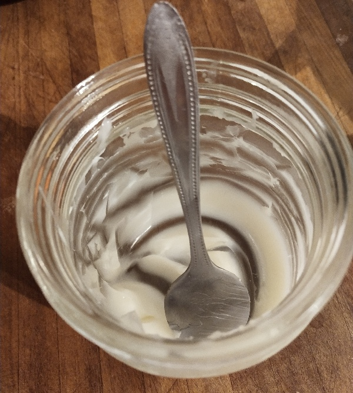
- 2 onions, finely chopped 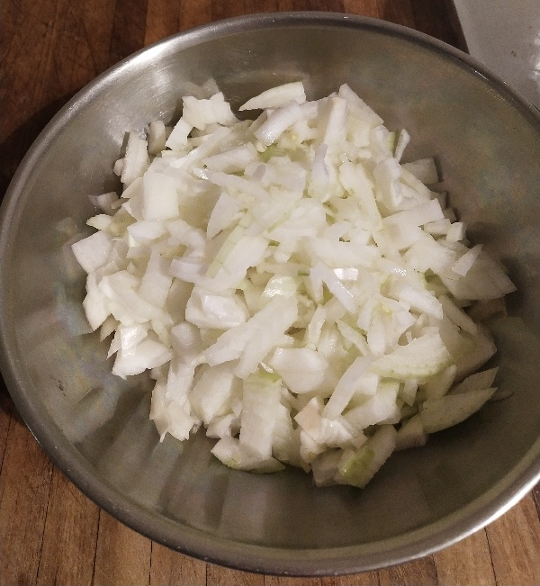
- 2 potatos
- 4 carrots 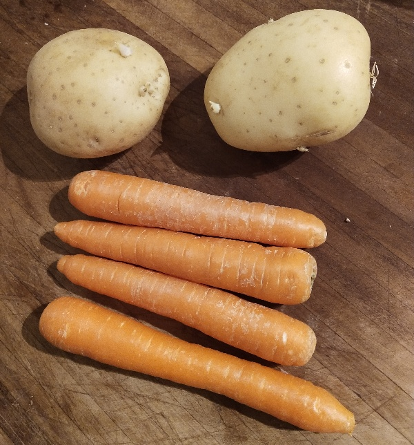
- 2 heads of garlic 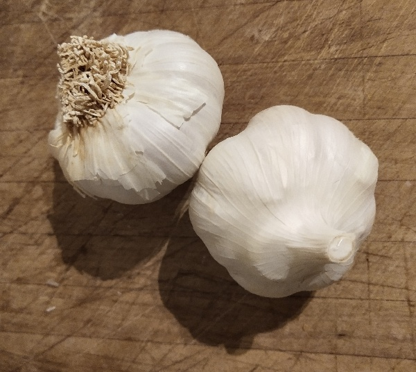
- 1 large chicken breast, skin off 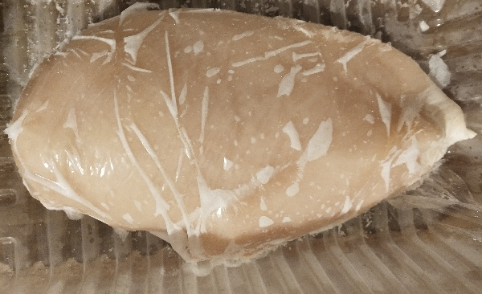
- 1 tin of diced tomatoes 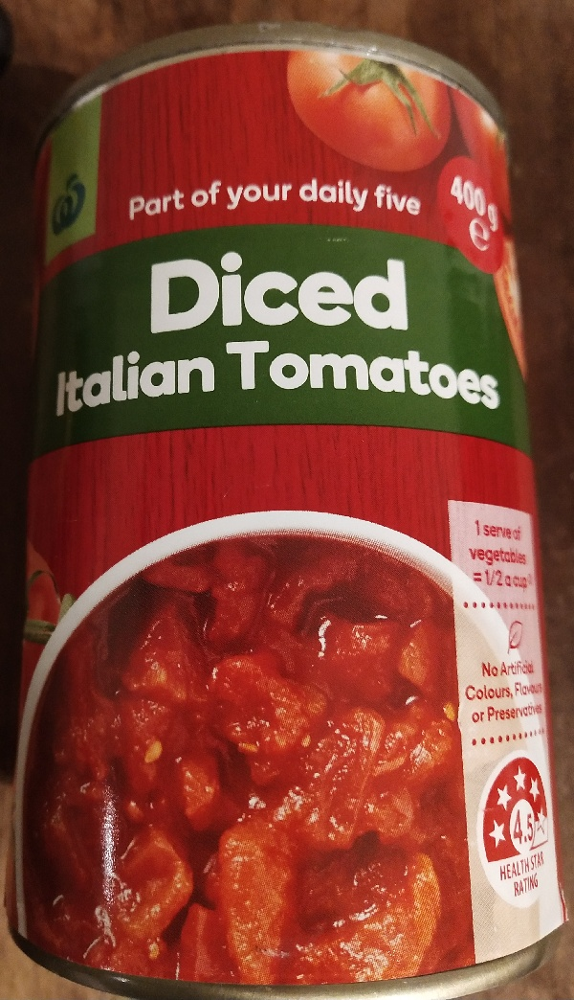
- 2 tablespoons black pepper , ground 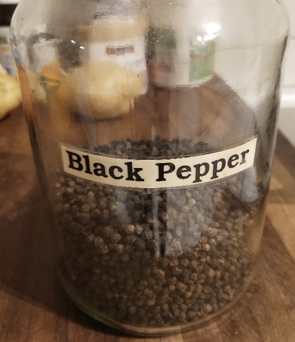
- 2 tablespoons paprika
- 1 teaspoon chilli powder (optional) 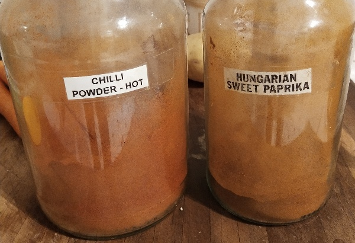
- 1 teaspoon salt 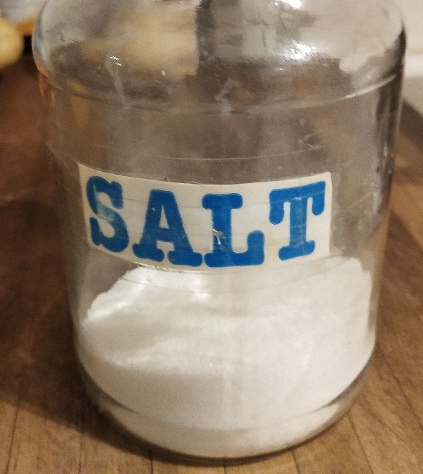
- 1 tablespoon fennel seeds (optional) 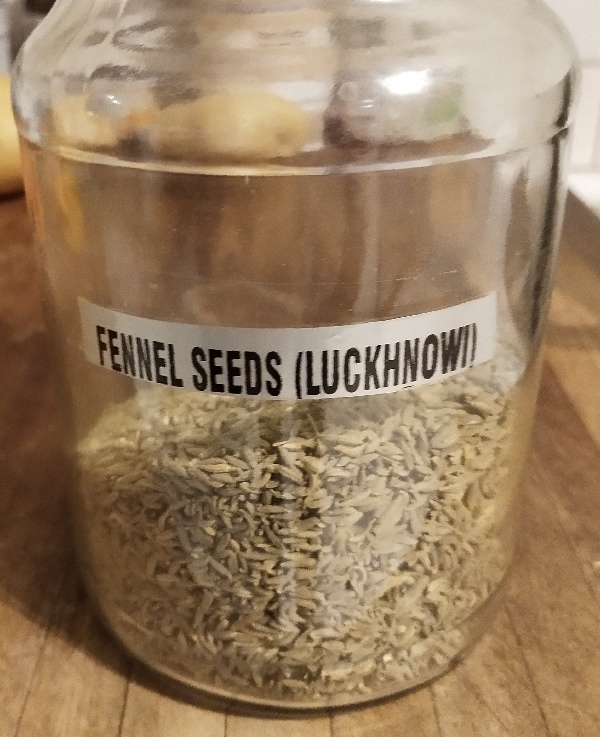
Instructions
- Heat the lard, butter or oil in a large pot over medium heat until melted. Add the garlic, cooking and stiring until slightly brown. Slice the chicken into thin strips and add it to the garlic. 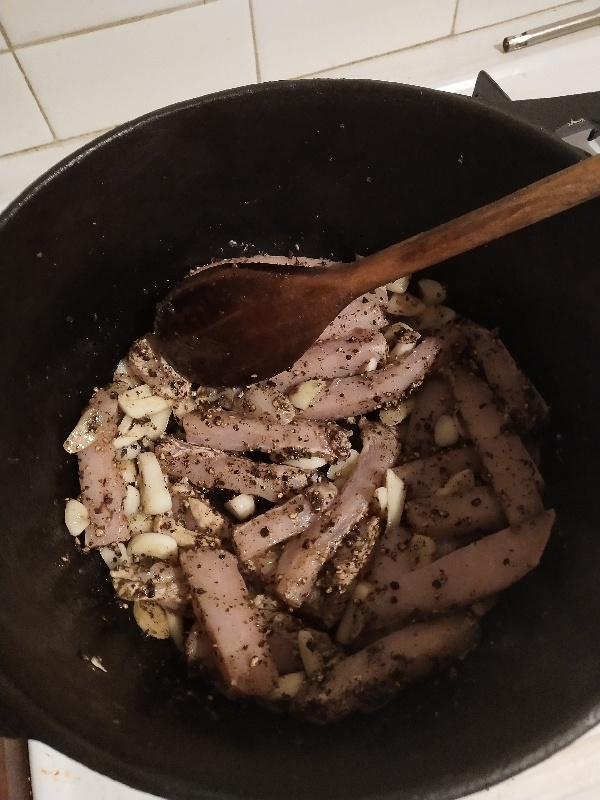
- Cook until the chicken is browned but still tender, stiring with a wooden spoon to prevent burning. 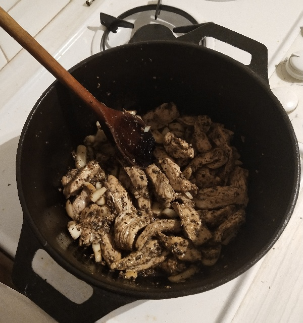
- Add the chopped onions. Continue cooking and stirring for 1-2 minutes. 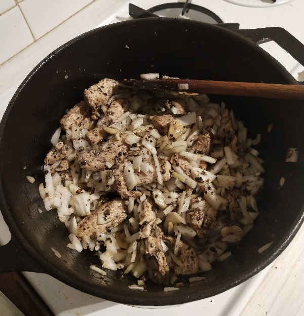
- Add the can of chopped tomatos and stir in with the previous ingredients. 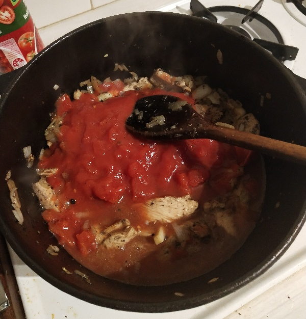
- Chop the potatos and carrots into small cubes. 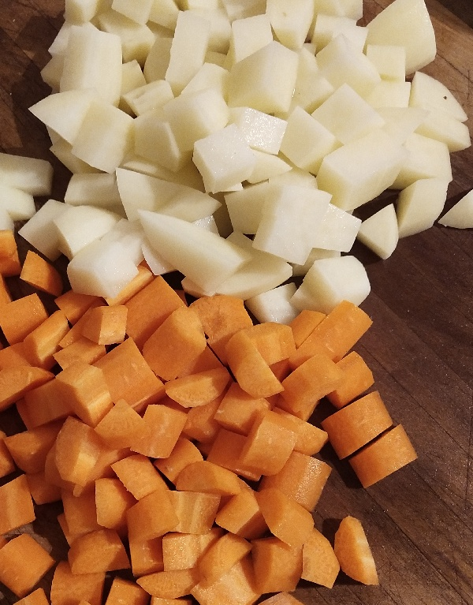
- Add the potatos and carrots and stir in with the previous ingredients. 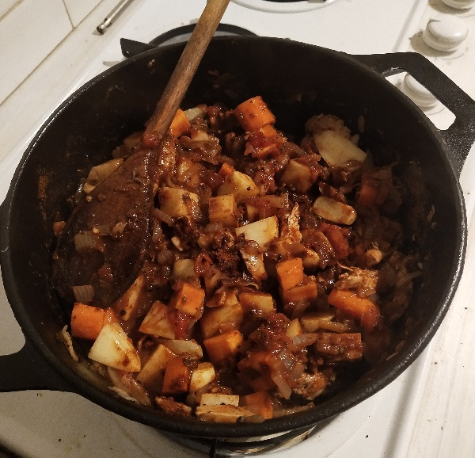
- Fill the pot to within 1cm of the top with boiling water. 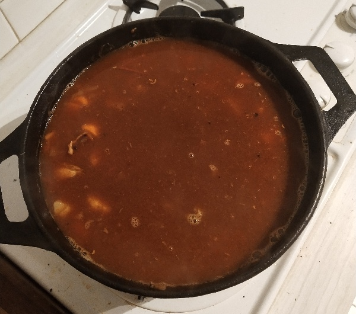
- Simmer on a very low heat for about 45-60 minutes until the potato cubes are soft. It is important that the heat is very low otherwise the soup will boil over causing a mess and potentially burning the ingredients near the bottom of the pot.
Enjoy!
Serve the soup hot and enjoy your delicious homemade meal. Perfect for a cold winter's night.
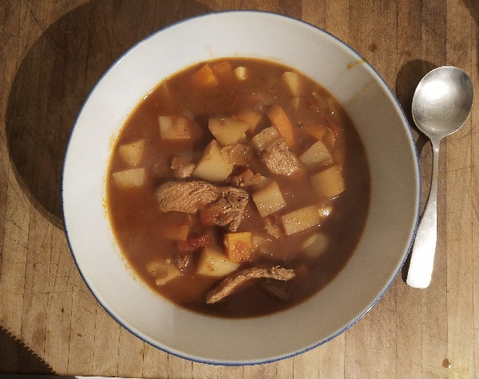Let the pot with the remaining soup cool and place it in the fridge for left-overs. Add a little water if the remaining mixture looks a little too dry. There will still be plenty of flavour for the next serve.
The next day reheat the pot on a high heat until it is boiling and then simmer on a very low heat for 20 minutes. Stir occasionally to prevent burning on the bottom of the pot.
I manage to get about 3 day's worth of soup from a medium sized pot by adding water and topping up with a little salt and spices.